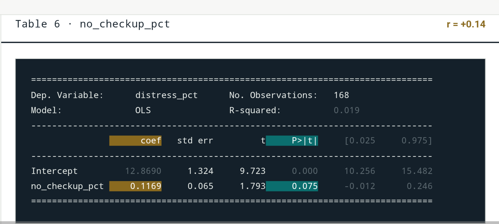

Skipping Checkups and Mental Distress in NYC ZIP Codes

The correlation between the percent of adults who skipped a routine checkup and the percent reporting mental distress is r = +0.14, which is a positive, weak relationship.
The slope is 0.1169, so for every 1-percentage-point increase in skipped checkups, mental distress goes up by about 0.12 percentage points on average.
The p-value is 0.075, which is above the .05 cutoff, so this result is not statistically significant and may be due to chance.
What It Means for People
In the ZIP codes where more people skip their checkups, some neighborhoods are likely to report mental distress, but the association between the variables is weak. This doesn’t prove that missing a checkup causes distress. Although the p-value is statistically insignificant, it doesn’t rule out the possibility that these neighborhoods would benefit from mental health support.
Home